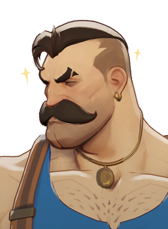
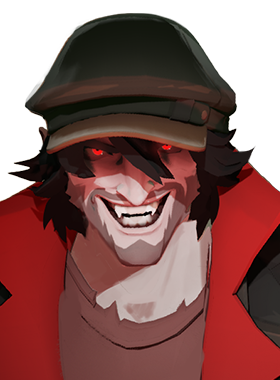
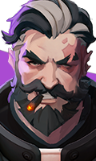

Apoio flexível com bom controle de grupo.
História
A gárgula não sabia o que estava acontecendo quando ganhou vida... apenas que um grande humano e um pequeno humano estavam sendo feridos. E então a gárgula entrou em ação, fazendo com que os atacantes fugissem horrorizados. O pequeno humano agradeceu e perguntou o nome da gárgula. A gárgula não tinha uma. E então o pequeno humano disse: “Vou te chamar de Ivy”. A gárgula, coberta de hera na época, achou que era um pouco óbvio, mas decidiu concordar pelo bem do pequeno humano.
Os humanos perguntaram se Ivy voltaria para casa com eles para que pudessem mostrar seu agradecimento, e então Ivy caminhou com eles. Naquela noite ela aprendeu muito. A família se chamava The Arroyo's. A pequena, Sofia. Mofongo é o que chamam de prato delicioso. Mas o mais importante, ela descobriu que as pessoas que os atacavam eram chamadas de "Sindicato de Mendoza" e estavam machucando pessoas... pessoas legais como o Arroyo.
18 anos se passaram desde o dia em que os Arroyo levaram Ivy para casa... e durante esse tempo ela assumiu como missão desmantelar o Sindicato de Mendoza e libertar o Harlem espanhol de suas garras. No entanto, o problema de dedicar sua vida a uma única busca por quase duas décadas é que você realmente não sabe o que fazer depois de alcançá-la. Pela primeira vez em sua vida, Ivy está preparada para se aventurar fora do Harlem espanhol e ver o que o mundo tem a oferecer além da justiça vigilante.
História oficial do jogo, traduzida automaticamente para o português.
Números reais
Habilidades
Cria um canteiro de espinhos que fere e retarda inimigos dentro do raio.
Liga Ivy a um aliado próximo para compartilhar bônus e replicar curas.
Vira pedra e bate no chão, ferindo e atordoando inimigos próximos enquanto se cura.
Ergue um aliado no ar e o derruba para explodir entre inimigos, ou o leva voando para longe do perigo.
Builds mais usadas
2.550 partidas registradas com esta build.
Revista Estendida (800) · Revista Titânico (1.600) · Taxa Extra (800) · Expansão Mística (800) · Regeneração Extra (800) · Perseguidor (1.600) · Rito de Cura (800) · Refutação (800) · Healbane (1.600) · Barril Enferrujado (800)
2.546 partidas registradas com esta build.
Revista Estendida (800) · Revista Titânico (1.600) · Balas Tesla (3.200) · Capacitor (6.400) · Botas de corrida (800) · Saúde Extra (800) · Rito de Cura (800) · Regeneração Extra (800) · Healbane (1.600) · Reforço de tiro na cabeça (800)
2.078 partidas registradas com esta build.
Revista Estendida (800) · Barril Enferrujado (800) · Revista Titânico (1.600) · Balas Tesla (3.200) · Rito de Cura (800) · Cura Nova (3.200) · Impulsionador de cura (1.600) · Ovo de Ganso Dourado (800) · Reforço de tiro na cabeça (800) · Rodadas Monstruosas (800)
Confrontos reais
 Deadman Danny — 61.9% de vitória
Deadman Danny — 61.9% de vitória Violet — 59.1% de vitória
Violet — 59.1% de vitória Pocket — 58.3% de vitória
Pocket — 58.3% de vitória Mirage — 57.9% de vitória
Mirage — 57.9% de vitória Shiv — 57.5% de vitória
Shiv — 57.5% de vitória- Sinclair — 57.4% de vitória
 Rat King — 45.9% de vitória
Rat King — 45.9% de vitória Graves — 46.6% de vitória
Graves — 46.6% de vitória Seven — 47.1% de vitória
Seven — 47.1% de vitória Paige — 47.3% de vitória
Paige — 47.3% de vitória Victor — 48.3% de vitória
Victor — 48.3% de vitória Haze — 48.6% de vitória
Haze — 48.6% de vitória
O que upar primeiro
Nível por nível, na ordem que os jogadores mais usam em partidas de verdade. A porcentagem mostra quantos escolheram aquela habilidade naquele nível.
Melhores duplas
Heróis que mais ganham jogando junto com ele, em partidas reais (pelo menos 1.500 partidas juntos).
- Rat King61,3%
- Graves60,3%
- Paige60,3%
- Haze57,8%
 Kelvin57,7%
Kelvin57,7%
- Shiv47,0%
- Deadman Danny47,0%
 Solomon48,0%
Solomon48,0%
Rota (lane)
Na rota, cada lado joga em dupla. Estes números são de confrontos reais: a diferença de almas é medida com o jogo já começado, então almas no verde significa que ele costuma estar na frente.
- Victor — 46,1% de vitória −431 almas (180 partidas)
- Paige — 46,4% de vitória −392 almas (797 partidas)

Lash — 46,5% de vitória +340 almas (159 partidas)- Haze — 47,6% de vitória −1.069 almas (189 partidas)

Drifter — 49,0% de vitória −349 almas (814 partidas)
Venator — 57,2% de vitória −1.021 almas (159 partidas)
Histórico de win rate
07/09: 52.6% → 26/10: 51.4% → 14/12: 51.7% → 01/02: 51.6% → 22/03: 51.8% → 10/05: 52.4% → 28/06: 53.4% → 16/08: 53.7% → 04/10: 53.2%